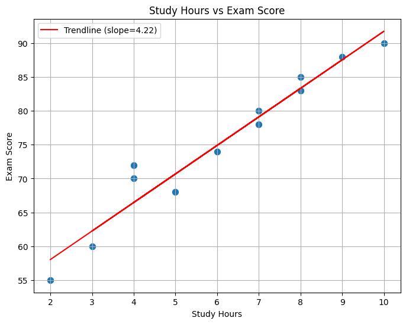
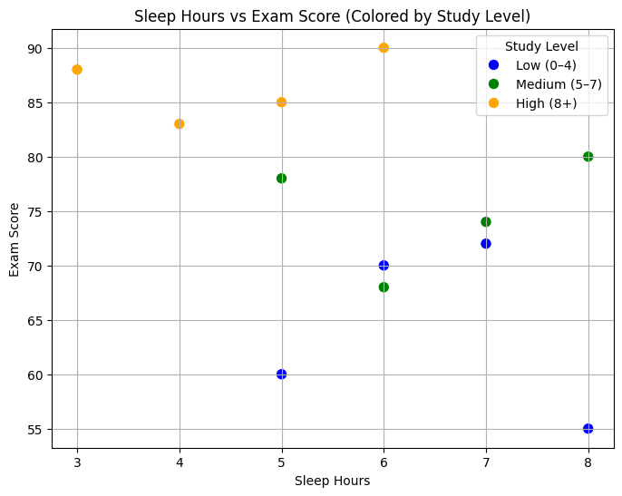

Gallery


Study hours appear more predictive of exam score because the first scatter plot shows a clear upward trend, with points closely following the red trendline. The slope of the trendline reinforces this pattern, showing that exam scores rise steadily as study hours increase. In contrast, the sleep‑hours plot is more scattered, with weaker clustering and no strong directional pattern, suggesting a weaker relationship. A noticeable outlier is Student A, who scores far below what the study‑hours trendline would predict, making them stand out compared with peers who study similar amounts.